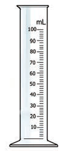
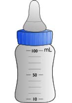

Measuring cylinder

Bottle
Units for measuring volume
The common units for measuring volumes of items are millilitres and litres. Millilitre is the smaller unit than the litre. They are both used to measure volumes of different items in our daily lives. Millilitres are usually used for items with less volume than one litre while litres are used for larger volumes. Their relationship is as follows:
Activity 7: Measuring the volume of water
- 1.Take a measuring cylinder.
- 2.Pour some water into the cylinder until it reaches halfway.
- 3.Read the volume of water in the cylinder.